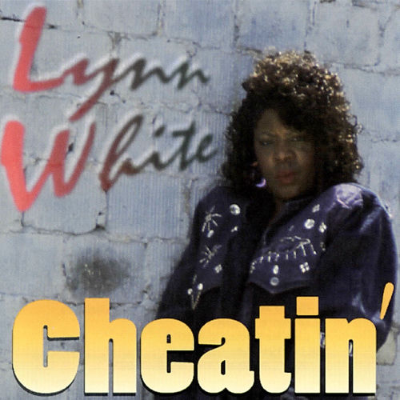

Lynn White
Lynn White is an American soul blues singer and songwriter. Between 1978 and 2006, she released fourteen albums, three compilation albums, and numerous singles. Her best known song is "I Don't Ever Wanna See Your Face Again" (1982). White had a subtle dulcet voice when compared to her contemporaries harsher tones.
Complete Discography & Tracklists (25)
1988 The New Me 🎵 10 Tracks
1991 Home Girl 🎵 9 Tracks
1993 Cheatin' 🎵 10 Tracks
1996 At Her Best 🎵 13 Tracks
2001 More of the Best 🎵 12 Tracks
2008 Sorry 🎵 5 Tracks
2017 Success 🎵 10 Tracks
2025 Ashes and Iron 🎵 10 Tracks
2025 Fairest of Them All 🎵 3 Tracks
2026 Molded 🎵 0 Tracks
No tracks registered.
2026 Glitch 🎵 0 Tracks
No tracks registered.
2026 Forever One 🎵 0 Tracks
No tracks registered.
✨ Similar R&B / Soul Artists